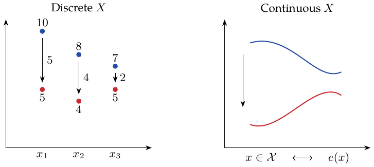

Lecture 2: Unconfoundedness and the Propensity Score
Unconfoundedness: the aim is to remove the influence of confounding factors. Propensity score: the probability of treatment given the covariates.
Aggregating difference-in-means estimators
Simply weight by probability. With discrete, numerically valued \(X_i\), assume \[\{Y_i(0),Y_i(1)\}\perp W_i\mid X_i=x,\qquad x\in\mathcal X.\] Here \(x\) is the grouping variable. Define the group-wise ATE \[\tau(x)=E[Y_i(1)-Y_i(0)\mid X_i=x].\] Then \[\begin{aligned} \widehat\tau_{\rm AGG}&=\sum_{x\in\mathcal X}\frac{n_x}{n}\widehat\tau(x),\\ \widehat\tau(x)&=\frac1{n_{x1}}\sum_{X_i=x,W_i=1}Y_i -\frac1{n_{x0}}\sum_{X_i=x,W_i=0}Y_i,\\ n_x&=|\{i:X_i=x\}|,\qquad n_{xw}=|\{i:X_i=x,W_i=w\}|. \end{aligned}\] Let \(e(x)=P(W_i=1\mid X_i=x)\). The within-group limit is \[\begin{aligned} \sqrt{n_x}(\widehat\tau(x)-\tau(x)) &\Rightarrow N\left(0, \frac{\operatorname{Var}[Y_i(0)\mid X_i=x]}{1-e(x)} +\frac{\operatorname{Var}[Y_i(1)\mid X_i=x]}{e(x)}\right)\\ &=N\left(0,\frac{b^2(x)}{e(x)(1-e(x))}\right), \end{aligned}\] where the second equality uses the common conditional variance assumption. Define \(\pi(x)=P(X_i=x),\quad\widehat\pi(x)=n_x/n\). This fixed-stratum limit uses finitely many strata, positive population masses, treatment overlap within each stratum, and finite conditional second moments. Then \[\begin{aligned} \widehat\tau_{\rm AGG}={}&\sum_x\pi(x)\tau(x) +\sum_x\pi(x)(\widehat\tau(x)-\tau(x))\\ &+\sum_x(\widehat\pi(x)-\pi(x))\tau(x) +\sum_x(\widehat\pi(x)-\pi(x))(\widehat\tau(x)-\tau(x)). \end{aligned}\] The first term is \(\tau\). The second is annotated as asymptotically normal, with variance
\[\sum_x\pi^2(x)\operatorname{Var}[\widehat\tau(x)].\]
The third has variance \(n^{-1}\operatorname{Var}[\tau(X_i)]\); the last is \(O_p(1/n)\). Combining these terms gives
Four-term aggregate-estimator expansion \(\textcolor{black}{\longrightarrow}\) Aggregate variance \(V_{\rm AGG}\).
\[\sqrt n(\widehat\tau_{\rm AGG}-\tau)\Rightarrow N(0,V_{\rm AGG}),\] \[\begin{aligned} V_{\rm AGG}&=\operatorname{Var}[\tau(X_i)] +\sum_{x\in\mathcal X}\pi^2(x)\frac1{\pi(x)} \frac{b^2(x)}{e(x)(1-e(x))}\\ &=\operatorname{Var}[\tau(X_i)] +E\left[\frac{b^2(X_i)}{e(X_i)(1-e(X_i))}\right]. \end{aligned}\]
Continuous covariates and propensity scores
My intuition for unconfoundedness: given \(X_i\), \(W_i\) cannot “peek” at the potential outcomes. If \[\{Y_i(0),Y_i(1)\}\perp W_i\mid X_i, \quad e(x)=P(W_i=1\mid X_i=x),\] then \[\{Y_i(0),Y_i(1)\}\perp W_i\mid e(X_i).\]
Supplementary sketches and calculation.

Conditioning and integrating gives \[\begin{aligned} &P(W_i=w\mid\{Y_i(0),Y_i(1)\},e(X_i))\\ &\quad=\int_{\mathcal X}P(W_i=w\mid\{Y_i(0),Y_i(1)\},X_i=x) dP(X_i=x\mid Y_i(0),Y_i(1),e(X_i))\\ &\quad=\int_{\mathcal X}P(W_i=w\mid X_i=x)dP(X_i=x\mid Y_i(0),Y_i(1),e(X_i))\\ &\quad=e(X_i)\mathbf1_{\{w=1\}}+(1-e(X_i))\mathbf1_{\{w=0\}}. \end{aligned}\] This is integration with respect to a conditional probability measure.
Propensity stratification
Sort the observations so that \(\widehat e(X_{i_1})\leq\widehat e(X_{i_2})\leq\cdots\leq\widehat e(X_{i_n})\).
Split them into \(J\) strata and estimate a difference in means within each stratum. If \(I_j\) contains ranks \(\lfloor(j-1)n/J\rfloor+1\) through \(\lfloor jn/J\rfloor\), write \[\widehat\tau_j=\frac{\sum_{i\in I_j}W_iY_i}{\sum_{i\in I_j}W_i} -\frac{\sum_{i\in I_j}(1-W_i)Y_i}{\sum_{i\in I_j}(1-W_i)}.\]
Make treatment and control groups more similar \(\textcolor{blue}{\longrightarrow}\) Sort by \(\widehat e(X_i)\) and form propensity-score strata.
Average the stratum estimates: \(\widehat\tau_{\rm STRAT}=J^{-1}\sum_{j=1}^J\widehat\tau_j\). With increasingly fine strata and adequate within-stratum sample sizes, this is consistent. For consistency, let \(J\) grow with \(n\) so strata become finer while retaining enough treated and control observations, under overlap and uniform consistency of \(\widehat e\). Fixed broad strata can leave residual confounding.
Inverse-propensity weighting
\[\widehat\tau_{\rm IPW}=\frac1n\sum_{i=1}^n \left\{\frac{W_iY_i}{\widehat e(X_i)}-\frac{(1-W_i)Y_i}{1-\widehat e(X_i)}\right\}.\] Oracle IPW assumes \(e(x)\) is perfectly known: \[\widehat\tau^*_{\rm IPW}=\frac1n\sum_i \left\{\frac{W_iY_i}{e(X_i)}-\frac{(1-W_i)Y_i}{1-e(X_i)}\right\}.\] Suppose overlap holds, \(\eta\leq e(x)\leq1-\eta\) for all \(x\in\mathcal X\), and \(|Y_i|<M\). If \[\sup_{x\in\mathcal X}|e(x)-\widehat e(x)|=O_p(a_n)\longrightarrow0,\] we obtain \[|\widehat\tau_{\rm IPW}-\widehat\tau^*_{\rm IPW}|=O_p(a_nM/\eta).\] Thus consistency of the oracle estimator transfers to estimated-propensity IPW. Moreover, \[E[\widehat\tau^*_{\rm IPW}]=E[Y_i(1)-Y_i(0)]=\tau.\] With overlap, oracle IPW converges at the \(1/\sqrt n\) scale.
Variance calculation: supplementary model.
Use the model \[\begin{aligned} Y_i(0)&=c(X_i)-(1-e(X_i))\tau(X_i)+\varepsilon_i(0),\\ Y_i(1)&=c(X_i)+e(X_i)\tau(X_i)+\varepsilon_i(1),\\ E[\varepsilon_i(w)\mid X_i]&=0,\qquad \operatorname{Var}[\varepsilon_i(w)\mid X_i=x]=b^2(x). \end{aligned}\] Then
Outcome model \(\textcolor{black}{\longrightarrow}\) Oracle-IPW variance \(V_{\rm IPW^*}\).
\[\begin{aligned} n\operatorname{Var}[\widehat\tau^*_{\rm IPW}] =V_{\rm IPW^*} ={}&E\left[\frac{c^2(X_i)}{e(X_i)(1-e(X_i))}\right] +\operatorname{Var}[\tau(X_i)]\\ &+E\left[\frac{b^2(X_i)}{e(X_i)(1-e(X_i))}\right],\\ \sqrt n(\widehat\tau^*_{\rm IPW}-\tau)&\Rightarrow N(0,V_{\rm IPW^*}). \end{aligned}\]
Personal comparison.
\(c(x)\) describes the relationship between \(X\) and \(Y\), rather than the relationship between \(X\) and \(\Delta Y\). Compared with aggregation, \[V_{\rm IPW^*}=V_{\rm AGG}+E\left[\frac{c^2(X_i)}{e(X_i)(1-e(X_i))}\right].\]
\(V_{\rm IPW^*}-V_{\rm AGG}\) \(\textcolor{blue}{\longrightarrow}\) The excess variance vanishes exactly when \(c(X)=0\) almost surely.
Compared with linear modeling: IPW is based on \(\{Y_i(0),Y_i(1)\}\perp W_i\mid X_i\), while the linear model relies on linearity. A linear outcome model also needs a causal identification argument, such as unconfoundedness; linearity alone is an estimation restriction.